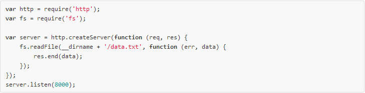
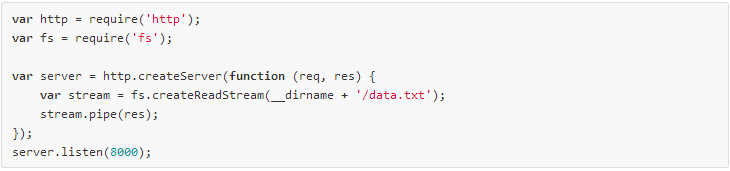
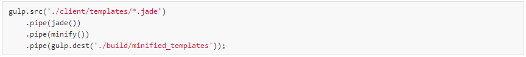
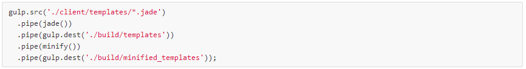
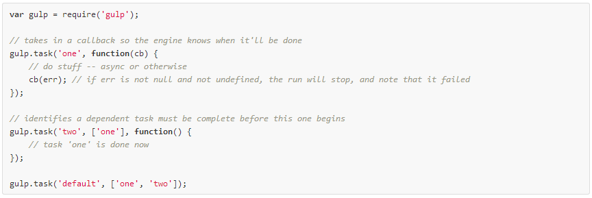
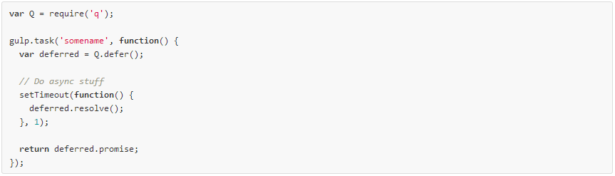
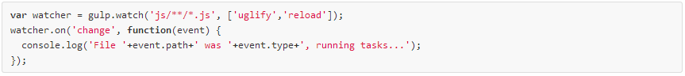

What is Gulp.js?
- Jade and Sass Compilation
- Compressing Images
- Remove console and debugging statements
- Pre-minify Angular Apps
- Minify and Concatenate CSS and JS Files
- Run Automated Test
gulpjs.com
Gulp Uses Streams
Why does this matter?


src
"Takes a glob and represents a file structure. Can be piped to plugins"

dest
"Can be piped to and it will write files. Re-emits all data passed to it so you can pipe to multiple folders. Folders that don't exist will be created."

task
"Define a task using Orchestrator."

task cont.
Q: What can you do in a task?
A: Anything you can do in a Node application.

Asynchronous execution is a Strength and Weakness of Gulp
All tasks in Gulp execute Asynchronously
As a task runner, there will be dependencies
We can provide task with hints
Hints come in 3 flavors
- Executing Callback
- Returning Promises
- Returning Streams
Sync Support
watch
"Watch files and do something when a file changes. This always returns an EventEmitter that emits change events."
